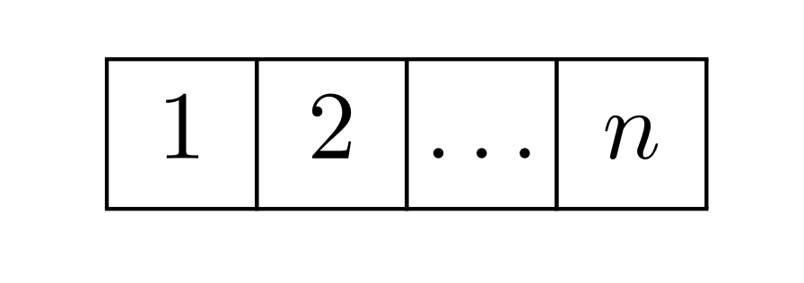
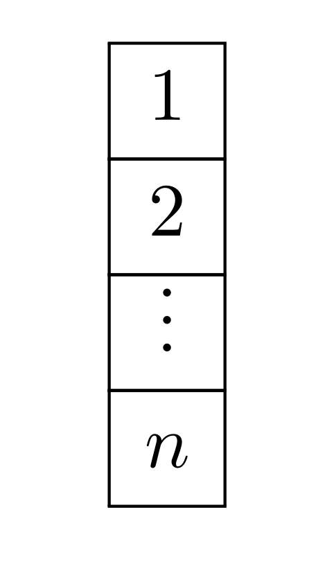
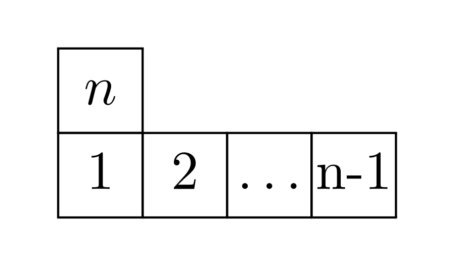

Representation theory of the symmetric group, the
double-centralizer theorem, and Schur-Weyl duality
Ben McDonough
2026-08-21
Double-centralizer theorem
Semisimple algebras
This section establishes some basic results about the representation theory of algebras. In particular, we will define the radical \(\operatorname{Rad}(A)\) of an algebra \(A\), and \(A\) will be called semisimple if \(\operatorname{Rad}(A) = 0\). The main point of this section is that the representation theory of semisimple algebras is basically completely analogous to that of a a group algebra \(A = k[G]\), where \(k\) is a field and \(G\) is a finite group, i.e. finite-dimensional modules are semisimple. For the rest of this section, let \(A\) be an algebra over a field \(k\), where \(k\) is algebraically closed.
Definition 1. Let \(\hat A\) refer to isomorphism classes of simple \(A\)-modules.
Lemma 1 (Filtrations). Any finite dimensional representation \(V\) of \(A\) admits a filtration \[\begin{aligned} 0 = V_0 < V_1 < \cdots < V_k = V \end{aligned}\] such that \(V_i\) are subrepresentations and the quotients \(V_{i}/V_{i-1}\) are irreducible.
Proof. We will induct on \(n \equiv \dim(V)\). If \(V\) is irreducible, then we are done, so let \(V_1 < V\) be an irreducible subrepresentation. Let \(U \equiv V/V_1\), and take a filtration \[\begin{aligned} U_0 < U_1 < \cdots < U_{k-1} = U \end{aligned}\] such that \(U_i/U_{i-1}\) are irreducible. Then let \(V_i \equiv U_i \oplus V_1\). This shows \[\begin{aligned} V_i / V_{i-1} = (U_i \oplus V_1)/(U_{i-1}\oplus V_1) \cong U_i / U_{i-1}, \end{aligned}\] which shows that the successive quotients are irreducible. Thus, \(0 < V_1 < \dots < V_{k-1} < V\) is the desired filtration. ◻
Proposition 1. \(\operatorname{Rad}(A)\) is the largest nilpotent two-sided ideal in \(A\).
Proof. Let \(V\) be a simple \(A\)-module and \(I \leq A\) a nilpotent ideal. Let \(v \in V\) be arbitrary. If \(Iv \neq 0\), then \(Iv = V\). However, this implies that \(xv = v\) for some \(x \in I\), therefore \(x^nv = v\), and so \(x^n \neq 0\). This contradicts \(I\) being nilpotent, so we must have \(Iv = 0\), and thus \(I \leq \operatorname{Rad}(A)\).
Next, consider \(A\) as an \(A\)-module over itself, and take a filtration \[\begin{aligned} 0 = A_0 < A_1 < \ldots < A_k = A. \end{aligned}\] Since \(x \in A\) acts on the irreducible quotients \(A_i/A_{i-1}\) by zero, this means that \(x: A_i \to A_{i-1}\), and therefore \(x^k = 0\). This shows that \(\operatorname{Rad}(A)\) is nilpotent. ◻
Lemma 2. Let \(V_I = \bigoplus_{i \in I} V_i\), where \(V_i\) are simple \(A\)-modules, and let \(f:V \to U\) be a surjection. Then \(U \cong V_J \equiv \bigoplus_{i \in J}V_i\) for some \(J \subseteq I\).
Proof. Let \(J \subseteq I\) be the maximal subset of \(I\) such that \(f|V_J\) is injective. If \(J \neq I\) (in which case we are done), let \(i \notin J\). Then the map \(f:V_i \to U/f(V_J)\) is nonzero for some \(i\) (otherwise \(I = J\)), so by Schur’s lemma, it is injective since \(V_i\) is simple. This implies that \(f|V_{J \cup \{i\}}\) is injective, contradicting the maximality of \(J\). ◻
Corollary 1. If \(V \cong \bigoplus_{i}V_i^{n_i}\) for \(V_i\) simple \(A\)-modules and \(U \leq V\), then \(V\) and \(U\) are both semisimple.
Theorem 1 (Density). The map \[\begin{aligned} \rho: A \to \operatorname{End}(V_i) \end{aligned}\] is surjective.
Proof. Suppose that \(V\) is a simple \(A\)-module, and let \(v_1, \dots, v_n\) be a basis of \(V\). The image of the map \(a \to (av_1, \dots, av_n)\) is a subrepresentation \(U \leq V^{\oplus n}\). By the above lemma, \(U \cong V^{\oplus r}\) for \(r \leq n\). Let \(\phi\) be the isomorphism \(V^{\oplus r} \cong U \leq V^{\oplus n}\). Represent \(\phi\) by the matrix \(X\), such that \(\phi(w_1, \dots, w_r) = (w_1, \dots, w_r)X\). If \(n = r\) we are done, so suppose \(r < n\).
Taking \(a = 1\), we see that \((v_1, \dots, v_n) \in U\), and therefore there exist \(w_1, \dots, w_r \in V\) such that \((w_1, \dots, w_r)X = (v_1, \dots, v_n)\). But since \(r < n\), \(X\) has a left kernel, so let \(X(q_1, \dots, q_n)^t = 0\). We then have \[\begin{aligned} (w_1, \dots, w_r)X(q_1, \dots, q_n)^t = \sum_i v_iq_i = 0, \end{aligned}\] which contradicts the choice of \(\{v_n\}\) as a basis. Therefore \(n = r\).
This shows us that \(U \cong V^n\). Therefore if \(c \in \operatorname{End}(V)\), then \((cv_1, \dots, cv_n)\) is in the image of the map \(a \mapsto (v_1, \dots, v_n)\), so \(av_i = cv_i\) for each \(i\). ◻
Theorem 2. If \(A\) is a finite-dimensional algebra, then \[A/\operatorname{Rad}(A) \cong \bigoplus_{V_i \in \hat A} \operatorname{End}(V_i)\] In particular, there are finitely many simple \(A\) modules and all are finite-dimensional.
Proof. Consider the homomorphism \[\begin{aligned} \rho = \bigoplus_{V_i \in \hat A} \rho_{i} : A \to \bigoplus_{V_i \in \hat A} \operatorname{End}V_i \end{aligned}\] Let \(B_i\) be the image of \(\rho_i\) and \(B\) be the image of \(\rho\). By Lem. 2, we know that \(B\) is semisimple. By the density theorem, \[B_i \cong \operatorname{End}(V_i) \cong V_i^{\dim V_i}\] so \(V_i\) occurs in \(B\) with multiplicity \(\dim V_i\). However this implies \[\bigoplus_i \operatorname{End}_i(V_i) \leq B \leq \bigoplus_i \operatorname{End}_i(V_i)\] which proves that \(\rho\) is a surjection. This implies that there are only finitely many non-isomorphic \(A\)-modules, all of which are finite dimensional. The kernel of \(\rho\) is \(\operatorname{Rad}(A)\), which proves the claim. ◻
Corollary 2 (Artin-Wedderburn for algebras). Every semisimple algebra \(A\) over an algebraically closed field \(k\) is isomorphic to \[\begin{aligned} A \cong \bigoplus_{i=1}^r \operatorname{Mat}_{d_i}(k) \end{aligned}\] for some \(r\) and \(d_1, \dots, d_r\).
Corollary 3. All finite-dimensional \(A\)-modules are semisimple.
Proof. Let \(V\) be a finite-dimensional \(A\)-module, and let \(v_1, \dots, v_n\) be a basis for \(V\). Then the map (of \(A\)-modules) \(\psi:A^n \to V\) via \(\psi(a_1, \dots, a_n) = a_1v_1 + \cdots + a_nv_n\) is surjective (by choosing \(a_1, \dots, a_n\) to be scalars). Therefore \(V\) is isomorphic (as an \(A\)-module) to a subspace of \(A^n\), and since we have shown in Thm. 1 that \(A^n\) is semisimple, so is \(V\). ◻
Proof of double-centralizer
Lemma 3. For any semisimple \(A\)-module \(V\) there is a canonical isomorphism \[\begin{aligned} V \cong \bigoplus_{V_i \in \hat A}\operatorname{Hom}_A(V_i, V) \otimes V_i, \end{aligned}\] canonical because of the choice of ordering of the summands, which is given by the evaluation map \(f \otimes v \mapsto f(v)\).
Proof. Since \(V\) is semisimple, we have \[\begin{aligned} V \cong \bigoplus_{V_i \in \hat A}V_i^{\oplus n_i} \cong \bigoplus_{V_i \in \hat A}k^{n_i} \otimes V_i \end{aligned}\] (\(k\) is the field). By Schur’s lemma, we find \[\begin{aligned} k^{n_i} \cong \operatorname{Hom}_A(V_i, V) \end{aligned}\] This proves the two are isomorphic. Furthermore, by Schur’s lemma, \(f \in \operatorname{Hom}_A(V_i, V)\) is given by element-wise scalar multiplication, so \(f \otimes x \mapsto f(x)\) is injective. This proves the claim. ◻
Theorem 3 (Double centralizer). Let \(E\) be a finite-dimensional algebra, and let \(A\leq E\) be a semisimple subalgebra, and let \(B \equiv \operatorname{End}_AE\). Then the following hold:
\(A = \operatorname{End}_BE\) (double-centralizer)
\(B\) is semisimple
The simple \(B\)-modules are in 1-to-1 correspondence with simple \(A\)-modules
As \(A\)-modules, we have a decomposition \[E \cong \bigoplus_{V_i \in \hat A} W_i \otimes V_i\] where \(W_i\) are the simple \(B\)-modules.
Proof. By Cor. 3, \(E\) is semisimple as an \(A\)-module, and so by Lem. [lem:altshur], we have a decomposition \[\begin{aligned} E \cong \bigoplus_{V_i \in \hat A}\operatorname{Hom}_A(V_i, E) \otimes V_i \end{aligned}\] Let \(W_i \equiv \operatorname{Hom}_A(V_i, E)\). Next, since \(A \cong \bigoplus_{i}\operatorname{End}(V_i) \subseteq \operatorname{End}(E)\), this shows that \(V_i\) occurs as a subspace of \(E\) for each \(i\), and thus \(W_i\) is nonzero for each \(i\). By Schur’s lemma, we have \[\begin{aligned} B = \operatorname{End}_A(E) &\cong \operatorname{Hom}_A(\bigoplus_{V_i \in \hat A}W_i \otimes V_i, \bigoplus_{V_j \in \hat A}W_j \otimes V_j) \notag\\ &\cong \bigoplus_{V_i,V_j \in \hat A}\operatorname{Hom}(W_i, W_j)\otimes \operatorname{Hom}_A(V_i, V_j) \notag\\ &\cong \bigoplus_{V_i \in \hat A}\operatorname{End}(W_i) \end{aligned}\] From this decomposition, we can see that \(W_i\) are irreducible as \(B\)-modules (precisely because \(W_i\) is irreducible as an \(\operatorname{End}(W_i)\)-module). By the same argument, \(\operatorname{Rad}(\operatorname{End}(W_i)) = 0\), so \(B\) is semisimple. Lastly, by Prop. 2, this shows that \(W_i\) are exhaustive of the irreducible \(B\)-modules, thus showing that irreducible \(B\)-modules are in 1-to-1 correspondence with irreducible \(A\)-modules. This proves all the statements of the theorem. ◻
Schur-Weyl duality
Proposition 2. Let \(G\) be a Lie group with Lie algebra \(\mathfrak g\). A tensor product of representations of \(\mathfrak g\) is defined by the following action of \(X \in \mathfrak g\): \[\begin{aligned} X(v_1 \otimes v_2 \otimes \cdots \otimes v_n) = \sum_{i=1}^n (v_1 \otimes \cdots \otimes Xv_i \otimes \cdots \otimes v_n) \end{aligned}\]
Proof. Recall the exponential map \(\mathrm{e}: \mathfrak g \to G\). In particular, \[\begin{aligned} \pdv{t}\Big|_{t=0} \mathrm{e}^{tX} = X \end{aligned}\] Then we can obtain the action of \(X\) based on the action of \(G\): \[\begin{aligned} \pdv{t}\Big|_{t=0}[\mathrm{e}^{Xt}(v_1 \otimes \cdots \otimes v_n)] &= \pdv{t}\Big|_{t=0}[\mathrm{e}^{Xt}v_1 \otimes \cdots \otimes \mathrm{e}^{Xt} v_n] \\ &= \sum_{i = 1}^n v_1 \otimes \cdots \otimes Xv_i \otimes \cdots \otimes v_n \end{aligned}\] which follows by the product rule. ◻
Definition 2 (Universal enveloping algebra). Given a Lie algebra \(\mathfrak g\), the universal enveloping algebra \(\mathcal U(\mathfrak g)\) is the associative algebra defined by the property that every morphism of \(\mathfrak g\) induces a unique morphism of \(\mathcal U(\mathfrak g)\) and vice-versa. As a consequence, Lie algebra modules are the same as modules over \(\mathcal U(\mathfrak g)\), which in turn are in correspondence with Lie group representations when the group is compact.
Remark 1. Note that while the Lie algebras of e.g. \(\operatorname{SU}(V)\) and \(\operatorname{GL}(V)\) are both finite-dimensional, the corresponding universal enveloping algebras are infinite-dimensional. This is the reason that there can be infinitely many \(\operatorname{SU}(V)\)-irreps.
Lemma 4. Let \(V\) be a finite-dimensional vector space over \(k = \mathbb R\) or \(\mathbb C\), let \(U \leq V\) be a subspace, and let \(\{v_1, \dots, v_n\} \in V\). Then if \[\begin{aligned} \sum_{i = 1}^n t^iv_i \in U \end{aligned}\] for sufficiently small \(t\), then \(v_1, \dots, v_n \in U\).
Proof. We will induct on \(n\). When \(n = 1\), the claim is obvious. Since \(k\) is a complete field and \(U\) is finite-dimensional, it is closed, and therefore contains \[\begin{aligned} \pdv{t}|_{t= 0} \sum_{i = 1}^n t^i v_i = v_1 \end{aligned}\] Thus, \(\sum_{i = 1}^{n-1} t^iv_{i+1} \in U\), and the claim follows from induction. ◻
Lemma 5. Let \(V\) be a finite dimensional vector space over a complete field \(k\) with characteristic zero. Then \(\operatorname{Sym}^n(V)\) is spanned by \[\begin{aligned} \{v \otimes \cdots \otimes v\}_{v \in V} \end{aligned}\]
Proof. By multinomial expansion, we find \[\begin{aligned} \qty(\sum_{i=1}^dt_iv_i)^{\otimes n} = \sum_{k_1 +k_2 + \cdots + k_d = n} \binom{n}{k_1, \dots, k_d}\pi_{\text{sym}}\bigotimes_{i=1}^d t_i^{k_i}v_i^{\otimes k_i} \end{aligned}\] where \(\pi_{\text{sym}}\) is a projector onto the symmetric subspace. Applying the lemma above sequentially to each \(i\), we get \(\pi_{\text{sym}}\bigotimes_{i=1}^d v_{i}^{\otimes k_i}\) in the span of \(\{v \otimes \cdots \otimes v\}\) for each \(k_1 + \dots + k_d = n\), which clearly span \(\operatorname{Sym}^n(V)\). ◻
Theorem 4 (Fundamental theorem of symmetric polynomials). Every symmetric polynomial can be expanded as a linear combination of power-symmetric polynomials \[P_j(\vb x) = x_1^j + x_2^j + \cdots + x_n^j\]
Theorem 5 (Schur-Weyl). Let \(\mathfrak{gl}(V)\) be the Lie algebra of \(\operatorname{GL}(V)\). The centralizer of \(\mathbb C \mathrm{S}_n\) (acting by permuting the tensor factors) in \(V^{\otimes n}\) is \(\mathcal U(\mathfrak{gl}(V))\).
Proof. Since \(V\) is finite-dimensional, we have \(\operatorname{End}_{\mathbb C\mathrm{S}_n}(V^{\otimes n}) \cong \operatorname{Sym}^n(\operatorname{End}(V))\). Let \(\Delta\) represent the action of \(\mathcal U(\mathfrak{gl}(V))\), i.e. \[\begin{aligned} \Delta(X)(v_1 \otimes \cdots \otimes v_n) = \sum_{i}v_1 \otimes \cdots \otimes Xv_i \otimes \cdots v_n \end{aligned}\] By the fundamental theorem on symmetric polynomials, for any \(v \in \operatorname{End}(V)\), we can write \(v^{\otimes n}\) as a polynomial in \(\Delta(v), \Delta(v^2), \Delta(v^3) \dots\). By Lem. 5, \(v^{\otimes n}\) span \(\operatorname{Sym}^n \operatorname{End}(V)\). This proves the claim. ◻
Corollary 4. The same holds for \(\mathcal U(\mathfrak{u}(V))\), the universal enveloping algebra of the Lie algebra of the unitary operators on \(V\).
Proof. Note that \(\mathfrak{u}\otimes \mathcal C\), also known as the complexification of \(\mathfrak{u}\), is just \(\mathfrak{gl}(V)\). Passing to the complexification does not change the centralizer. ◻
Corollary 5 (Schur Functors). We have a decomposition \[\begin{aligned} V^{\otimes n} \cong \bigoplus_{\lambda} V_{\lambda} \otimes W_\lambda \end{aligned}\] as representations of \(\mathbb CS_n \times G\), where \(G = \operatorname{U}(V), \operatorname{GL}(V)\) and \(V_\lambda\) are the irreps of \(S_n\) indexed by a partition \(\lambda\), and \(W_\lambda\) are irreps of \(G\). In particular, the map \[\begin{aligned} V_\lambda \mapsto W_\lambda \equiv \operatorname{Hom}_{G}(V_\lambda, V^{\otimes n}) \end{aligned}\] is a surjection (some \(W_\lambda\) may vanish).
Remark 2. In the proof of the double centralizer theorem [Thm. 3], we saw that \(V_\lambda\) and \(W_\lambda\) were in bijection. The distinction is that \(\mathcal U(\mathfrak{gl}(V))\) is infinite-dimensional, and we are applying the theorem to its finite-dimensional image within \(\operatorname{End}(V^{\otimes n})\). The simple modules of this image are automatically simple modules of \(\mathcal U(\mathfrak{gl}(V))\), but the reverse is not true.
Representation theory of the symmetric group
Induced representations
Let \(G\) be a group. It is easier to define induced representations in terms of modules over the group algebra \(\mathbb CG\). (For historical reasons, representation is generally reserved for groups and module for rings, but they are the same thing.) We can see that the \(\mathbb CG\)-modules are in direct correspondence with representations of \(G\) over \(\mathbb C\). This fact is because every group morphism \(G \to \operatorname{End}(V)\) can be extended by \(\mathbb C\)-linearity into an algebra morphism \(\mathbb CG \to \operatorname{End}(V)\), and vice-versa. This leads us to the following idea of induction of representations:
Definition 3 (Induced representation). Given a \(\mathbb CH\)-module \(V\) where \(H \leq G\), we define \(\operatorname{Ind}_H^G(V) \equiv \mathbb C G \otimes_{\mathbb CH} V\) to be the representation induced by \(V\) on \(G\).
Note that if \(A\) is a right \(B\)-module and \(C\) is a left \(B\)-module, then the tensor product \(A \otimes_B C\) can be defined just like the tensor product of vector spaces where elements of \(B\) are treated as scalars, so \(ab \otimes c = a \otimes bc\). Induced representations are special due to the following correspondence:
Lemma 6 (Frobenius reciprocity). Let \(\Res_G^H(U)\) denote the restriction of a representation \(U\) of \(G\) to \(H \leq G\). Then \[\begin{aligned} \operatorname{Hom}_{G}(\operatorname{Ind}_H^G(V), U) \cong \operatorname{Hom}_H(V, \Res^H_G(U)) \end{aligned}\]
Proof. This is a consequence of the more general tensor-hom adjunction, which we will state here:
Proposition 3. Let \(A, B, C\) be rings. Let \(M\) be an \(A-B\)-module, let \(N\) be a \(B-C\)-module, and let \(K\) be an \(A-C\)-module. Then \[\operatorname{Hom}_A(M \otimes_B N, K) \cong \operatorname{Hom}_B(N, \operatorname{Hom}_A(M,K))\] is a natural isomorphism of \(C-C\)-bimodules.
Proof. The isomorphism is the evaluation map \[\begin{aligned} \operatorname{Hom}_A(M \otimes_B N, K) \ni \phi \mapsto \psi: [\psi(n)](m) = \phi(m \otimes n) \end{aligned}\] and one can check that this isomorphism preserves the module structure and is natural. ◻
From this, Frobenius reciprocity follows: observe that \[\operatorname{Hom}_{\mathbb CG}(\mathbb CG \otimes_{\mathbb CH} V, U) \cong \operatorname{Hom}_{\mathbb CH}(V, \operatorname{Hom}_{\mathbb CG}(\mathbb CG, U)) \cong \operatorname{Hom}_{\mathbb CH}(V, U)\] where we applied the isomorphism \(\operatorname{Hom}_{A}(A, V) \cong V\) for any ring \(A\) and \(A\)-module \(V\). ◻
Classifying irreps of \(S_n\)
Now, we will deduce the representation theory of \(S_n\). We know in general there is a (non-canonical) bijection between irreps and conjugacy classes. Since conjugation in \(S_n\) is just a permutation of the \(n\) labels, conjugacy classes correspond to cycle types, which in turn correspond to partitions of \(n\). Therefore, we will look for a set of non-isomorphic irreps corresponding to every partition \(\lambda \vdash n\).
First, we define Young diagrams and Young tableaux.
Definition 4. Given a partition \(\lambda = \lambda_1 \geq \lambda_2 \geq \dots \geq \lambda_k\) of \(n\), a Young diagram is a set of boxes with \(\lambda_1\) boxes in the first row, \(\lambda_2\) boxes in the second, etc. Using this representation, the transpose of a partition \(\lambda\) is defined as the partition associated to the Young diagram of \(\lambda\) with the rows and columns interchanged. A Young tableau is a Young diagram with unique numbers from \(1, \dots, n\) in each of the boxes. Given \(g \in S_n\) and a Young tableau \(T\), we will write \(gT\) for the tableau where each entry \(j\) in \(T\) is replaced with \(g(j)\).
Definition 5 (Young subgroups). Given a partition \(\lambda = \lambda_1 \geq \lambda_2 \geq \dots \geq \lambda_k\), consider the Young tableau \(T_\lambda\) which is filled with numbers sequentially left to right and bottom to top. Define \(P_\lambda\) as the subgroup \(S_{\lambda_1} \times S_{\lambda_2} \times \dots \times S_{\lambda_k} \leq S_n\) which preserves the rows of \(T_\lambda\), which is called the Young subgroup of \(\lambda\). Define \(Q_\lambda\) to be the subgroup preserving the columns of \(T_\lambda\), which is equivalently the Young subgroup of the transpose \(\lambda^t\).
Then we will define the following distinguished representations of \(S_n\):
Definition 6. Given a partition \(\lambda\), define \[\begin{aligned} I^+_\lambda &\equiv \operatorname{Ind}_{P_\lambda}^{S_n}(\operatorname{triv}) & I^-_\lambda &\equiv \operatorname{Ind}_{Q_{\lambda}}^{S_n}(\operatorname{sgn}) \end{aligned}\]
Our goal will be to show that \(I_{\lambda}^+, I_{\lambda}^-\) have one unique, irreducible summand in common, which we will call \(V_{\lambda}\), or a Specht module.
Definition 7 (Lexicographic ordering). We will say \(\lambda > \mu\) if the first nonzero \(\lambda_i - \mu_i\) is positive.
Proposition 4. \(\dim \operatorname{Hom}(I_\mu^-, I_{\lambda}^+) = 0\) if \(\lambda > \mu\) and 1 if \(\lambda = \mu\).
Proof. By Frobenius reciprocity, \[\begin{aligned} \operatorname{Hom}_{S_n}(I^{-}_{\lambda}, I^+_{\lambda}) &\cong \operatorname{Hom}_{Q_\lambda}(\mathrm{sgn}, \mathbb C[S_n/P_{\lambda}]) \cong \operatorname{Hom}_{Q_{\lambda}}(\mathbb C[S_n/P_\lambda], \mathrm{sgn}) \\ &\cong \{f:S_n \to \mathbb C: f(\tau g\sigma) = \operatorname{sgn}(\tau)f(g) \ \forall \ \tau \in Q_\lambda, \sigma \in P_\lambda\} \end{aligned}\] where we have identified \(\operatorname{Ind}_H^G(\mathrm{triv}) \cong \mathbb C[G/ H]\), and also used \(\operatorname{Hom}_G(U, V) \cong \operatorname{Hom}_G(V, U)\) for completely reducible representations.
Now we notice that if \(\tau = g\sigma g^{-1}\) for any transpositions \(\tau \in Q_\mu, \sigma \in P_{\lambda}\), then \[f(g) = f(g\sigma) = f(\tau g) = -f(g) \implies f(g) = 0\]
This brings us to the following lemma:
Lemma 7. If \(\lambda > \mu\), then for any \(g \in S_n\) there exist \(\sigma \in P_\lambda, \tau \in Q_{\mu}\) with \(\tau = g\sigma g^{-1}\).
Proof. If \(\lambda_1 > \mu_1\), then there must be two integers in the first row of \(gT_\lambda\) that lie in the same column of \(T_{\mu}\). The permutations interchanging these integers are the desired \(\tau, \sigma\). Otherwise, \(\lambda_1 = \mu_1\). If no two integers in the first row of \(T_\lambda\) lie in the same column of \(T_\mu\), then we can find a permutation \(q \in Q_\lambda\) which brings all the integers in \(T_\mu\) lying in the first row of \(gT_\lambda\) to the first row of \(T_{\mu}\), and a permutation \(p \in gP_\lambda g^{-1}\) which re-orders the first row of \(gT_\lambda\) so that the first rows of \(pgT_\lambda\) and \(qT_\mu\) are the same. Then we can eliminate the first row of both tableaux, and repeat the argument. ◻
The above lemma implies the first part of our claim, because if \(\lambda > \mu\), then for any \(g\), \(f(g) = 0\), so \(\operatorname{Hom}_{S_n}(I^-_\mu, I^+_\lambda) = 0\).
Next, we will make a similar argument for \(\lambda = \mu\). We notice that \(f(g)\) is determined entirely by the double-coset \(Q_\lambda g P_\lambda\). On the identity coset, i.e. any \(g = qp\) with \(q \in Q_\lambda, p\in P_\lambda\), we have \(f(g) = f(qp) = \operatorname{sgn}(q)f(1)\). We will now argue that \(f\) must vanish on all non-identity double-cosets, which will follow from a lemma:
Lemma 8. If \(g \not \in Q_\lambda P_\lambda\), then there exist \(\sigma \in P_\lambda\), \(\tau \in Q_\lambda\) such that \(\tau = g \sigma g^{-1}\).
Proof. We will prove the contrapositive. Suppose such a \(\sigma, \tau\) do not exist. Then any two elements of the first row of \(gT_\lambda\) must be in different columns of \(T_{\lambda}\), otherwise transpositions interchanging these would produce the desired \(\sigma, \tau\). As in the previous lemma, we can thus construct \(q \in Q_\lambda\), \(p \in gP_\lambda g^{-1}\) such that \(pgT_\lambda = qT_\lambda\). This gives us \(pg = gp'\) where \(p' = g^{-1}qg \in P_\lambda\), and so \(g = qp' \in Q_\lambda P_\lambda\), as desired. ◻
Now to complete the proof, if \(g \notin Q_\lambda P_\lambda\) then \(f(g) = 0\) because by the lemma above, we can find such a \(\sigma, \tau\). If \(g = qp \in Q_\lambda P_\lambda\), then \(f(g) = \operatorname{sgn}(q)f(1)\). This shows that \(\operatorname{Hom}_{S_n}(I_\lambda^-, I_\lambda^+)\) is 1-dimensional, which completes the claim. ◻
The classification theorem then follows:
Corollary 6. The representations \(V_\lambda\) are a complete set of non-isomorphic representations of \(S_n\).
Proof. Since \(\dim \operatorname{Hom}(I^-_\lambda, I^+_\lambda) = 1\), there is exact one irreducible \(V_\lambda\) which occurs in both \(I_\lambda^-, I_\lambda^+\) by Schur’s lemma, which we call \(V_\lambda\). If \(\lambda \neq \mu\), then either \(\mu > \lambda\) or \(\lambda > \mu\). We assume the latter without loss of generality. Then \(\dim \operatorname{Hom}(I^-_\mu, I^+_\lambda) = 0\), so \(V_\lambda\) must not occur in \(I^-_\mu\), and therefore \(V_\mu\) is not isomorphic to \(V_{\lambda}\). Since there are exactly as many nonisomorphic irreps as conjugacy classes in \(S_n\) which are labeled by partitions, this completes the proof. ◻
Computations
Explicit basis for \(V_\lambda\)
Proposition 5 (Formula for induced representations). Suppose that \(\chi\) is the character of a 1-dimensional representation. Then \[\operatorname{Ind}_{H}^G \chi \cong \mathbb CG\epsilon \hspace{2cm}\text{where}\hspace{2cm} \epsilon = \frac{1}{|H|}\sum_{h \in H}\overline \chi(h)h\] is an idempotent.
Proof. Let \(\{g_1, \dots, g_k\}\) be a set of coset representatives for \(G/ H\). \(\operatorname{Ind}_H^G \chi\) is spanned by elements of the form \(g_i \otimes \mathbb C_\chi\), where \(\mathbb C_{\chi}\) is a one-dimensional vector space. Then for any \(g \in G\) we have \(gg_i = g_jh\) for a unique \(g_j, h\). By definition, \[\begin{aligned} g(g_i \otimes \mathbb C_{\chi}) = \chi(h)(g_j \otimes \mathbb C_{\chi}) \end{aligned}\] On the other hand, we observe that \(\mathbb CG \epsilon\) is spanned by elements \(g_i \epsilon\), and \[\begin{aligned} g g_i \epsilon = g_j\frac{1}{|H|}\sum_{k \in H}hk\overline \chi(k) = \chi(h)g_j\epsilon \end{aligned}\] Therefore the map \(g_i \otimes \mathbb C_\chi \mapsto g_i\epsilon\) is the desired isomorphism, completing the proof. ◻
Lemma 9. If \(\epsilon\) is an idempotent, \(A\) is an algebra, and \(V\) is an \(A\)-module, then \(\operatorname{Hom}_{A}(A\epsilon, V) \cong \epsilon V\).
Theorem 6 (Young Symmetrizers). Given a partition \(\lambda\), let \[\begin{aligned} a_\lambda & \equiv \frac{1}{|P_\lambda|}\sum_{\sigma \in P_\lambda} \sigma & b_\lambda & \equiv \frac{1}{|Q_\lambda|}\sum_{\tau \in Q_\lambda}\operatorname{sgn}(\tau)\tau & c_{\lambda} &\equiv a_\lambda b_\lambda \end{aligned}\] Then \(c_\lambda\) (called a Young symmetrizer) is proportional to an idempotent, and we have the following explicit expression for \(V_\lambda\): \[V_\lambda \cong \mathbb C[S_n] c_\lambda\]
Proof. Notice that \(I^-_\lambda \cong \mathbb C[S_n]b_\lambda\) and \(I^+_\lambda \cong \mathbb C[S_n]a_\lambda\) by the lemma above. Then we have \[\operatorname{Hom}_{S_n}(I^-_\lambda, I^+_\lambda) \cong \operatorname{Hom}_{S_n}(\mathbb C[S_n], b_\lambda \mathbb C[S_n] a_{\lambda}) \cong b_\lambda \mathbb C[S_n] a_{\lambda}\] so we conclude \(b_{\lambda} \mathbb C[S_n]a_\lambda\) is one-dimensional. Also, this implies \((c_\lambda^*)^2 = b_{\lambda}a_\lambda b_{\lambda}a_{\lambda} \propto c_\lambda^*\), so \(c_{\lambda}\) is proportional to an idempotent. Now we can compute \[\operatorname{Hom}_{S_n}(I^-_\lambda, \mathbb C[S_n]a_\lambda b_\lambda) \cong \operatorname{Hom}_{S_n}(\mathbb C[S_n]b_\lambda, \mathbb C[S_n]a_\lambda b_{\lambda}) \cong (b_{\lambda} \mathbb C[S_n] a_\lambda) b_{\lambda}\] Similarly, \[\begin{aligned} \operatorname{Hom}_{S_n}(\mathbb C[S_n]a_\lambda b_{\lambda}, I^+_{\lambda}) \cong \operatorname{Hom}_{S_n}(\mathbb C[S_n], a_{\lambda}b_{\lambda} \mathbb C[S_n] a_{\lambda}) \cong a_{\lambda} (b_{\lambda} \mathbb C[S_n]a_\lambda) \end{aligned}\] so both are one-dimensional. This shows that \(\mathbb C[S_n]a_{\lambda}b_{\lambda}\) occurs once in \(I^+_\lambda\) and \(I^-_\lambda\), so it must be isomorphic to \(V_\lambda\). ◻
Definition 8 (Young tabloids and polytabloids). Given a Young tableau \(T\), define a tabloid \(\{T\}\) to be the equivalence class of tableaux which are equal up to a permutation \(\sigma \in P_T\) (the group preserving the rows of \(T\)). Then define a polytabloid to be a tableaux which is antisymmetrized over \(\pi \in Q_{T}\) (the group preserving the columns): \[\begin{aligned} \mathrm{e}_{T} \equiv \sum_{\pi \in Q_T}\operatorname{sgn}(\pi)\{ \pi T\} \end{aligned}\]
Proposition 6. Given a partition \(\lambda\), we have \[\begin{aligned} V_\lambda \cong \mathbb C[S_n] \mathrm{e}_{T_\lambda} \end{aligned}\]
Proof. Consider the map \[\begin{aligned} V_\lambda \cong \mathbb C[S_n]c_\lambda \ni \sigma c_{\lambda} \mapsto \mathrm{e}_{\sigma T_{\lambda}} \end{aligned}\] and we will prove this is an isomorphism of representations.
First, we say that \(T_1 \sim T_2\) iff \(T_2 = \sigma T_1\) for some \(\sigma \in P_T\). This implies that \(\pi T_2 = (\pi \sigma \pi^{-1})\pi T_1\) iff \(T_1 \sim T_2\). Since \(P_{\pi T} = \pi P_T\pi^{-1}\), this shows that \(\{\pi T\} = \pi\{T\}\). From this, we find \[\begin{aligned} \sigma \mathrm{e}_{\{T\}} = \sum_{\pi \in Q_T}\operatorname{sgn}(\pi)\{ \sigma\pi T\} &= \sum_{\pi \in Q_T}\operatorname{sgn}(\pi)\{(\sigma \pi\sigma^{-1}) \sigma T\} \notag \\ &= \sum_{\pi \in Q_T}\operatorname{sgn}(\sigma\pi\sigma^{-1})\{(\sigma \pi\sigma^{-1}) \sigma T\} \notag \\ &= \sum_{\pi' \in \sigma Q_T\sigma^{-1}}\operatorname{sgn}(\pi')\{\pi' \sigma T\} = \mathrm{e}_{\sigma T} \end{aligned}\] Therefore our map is a morphism of representations. Using this, we make the following observation: \[\mathrm{e}_{T_\lambda} = c_\lambda T\] We then see that \(\mathbb C[S_n]T\) is a faithful representation of \(S_n\) for any tableau \(T\) (just the fundamental representation!). As an element of \(\mathbb C[S_n]T\), we have \[\begin{aligned} v = \sum_{\sigma} a_\sigma \sigma \mathrm{e}_{T_\lambda} = \sum_{\sigma}a_{\sigma}\sigma c_{\lambda}T \end{aligned}\] so if \(v\) vanishes then \(\sum_{\sigma}a_{\sigma}\sigma c_{\lambda}\) must vanish as well. This shows that our map is injective. Surjectivity follows by definition. ◻
The theorem above gives us an easy way to explicitly work out the basis for a given irreducible representation, which we will illustrate with some examples.
Examples
Observe the polytabloid generated by the following tableau:

Now consider the polytabloid generated by the tableau

Lastly, we have the permutation representation \(\operatorname{span}\{\ket{k}\}_{k=1}^n\) where the action is defined by \(\sigma\ket{k} = \ket{\sigma(k)}\). There is a copy of the trivial representation \(\ket{\mathrm{triv}} = \frac{1}{n}\sum_k \ket{k}\). The orthogonal compliment \(\ket{\mathrm{triv}}^{\perp}\) within the permutation representation has a special name, the standard representation, given explicitly by \[\begin{aligned} \left\{\sum_{k = 1}^n a_k \ket{k} : \sum_{k=1}^n a_k = 0 \right\} \end{aligned}\] Is the standard representation irreducible? Consider the polytabloid generated by
